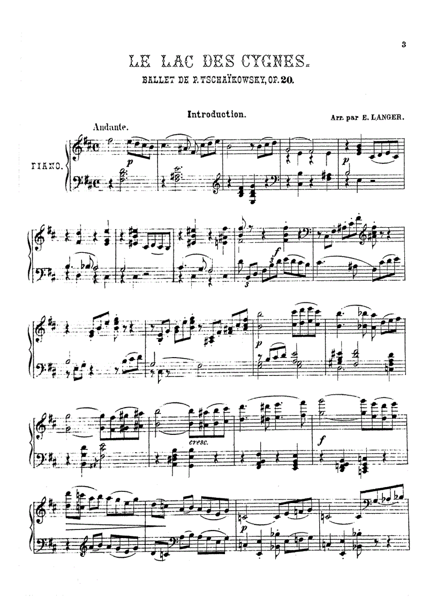

Thông tin tác phẩm
- Nhà soạn nhạc Tchaikovsky
- Ra mắt 1877
- Thể loại Ba lê cổ điển
- Quốc gia Nga

“Một bi kịch đẹp đẽ về tình yêu, lời nguyền
và sự giải thoát trong cái chết.”
“Dưới ánh trăng bạc phủ mặt hồ tĩnh lặng,
Odette dang đôi cánh trắng mỏng manh.
Từng chuyển động mềm mại như hơi thở,
vừa đẹp đẽ vừa chất chứa nỗi buồn vô tận.
Nàng là lời nguyền sống động của đêm tối,
là khát vọng được yêu và được giải thoát.
Siegfried bước đến, ngỡ ngàng trước vẻ đẹp ấy,
như lần đầu tiên chạm vào định mệnh.”